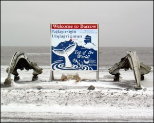
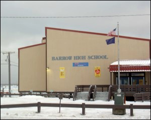

Geoinformatics at Barrow High School
Barrow is the northernmost city of the United States of America and often referred to as the 'Top of the World'. Located on the coast of the Arctic Ocean at latitude 71°16'N and longitude 156°48'W, Barrow is home for more than 4,600 residents. Over half the population of this coastal community is Iñupiat Eskimo. It is also the center of the North Slope Borough.
Barrow is practically the hub of Arctic research in the United States. The Barrow Arctic Science Consortium, the Arctic Research Consortium of the United States, funded projects from federal organizations such as the National Science Foundation, National Aeronautics and Space Administration, National Oceanic and Atmospheric Administration, and several other organizations and universities have helped to bring the researchers and the Barrow community in close contact and constantly learning from each other.
To meet the academic needs of the community, Barrow has its own elementary, middle and high school and a post-secondary education center. Enrollments in the Barrow High School in the year 2004 indicate that of the total of 275 students, there is an approximately 50:50 split between the number of boys and girls. 72 percent of the students are Native Alaskans, 14 percent are Asian Pacific, whereas the Black, Hispanic and Caucasian constitute the remaining 14 percent.
The science facilities at the Barrow High School are comparable to the science facilities of one of the best schools in the State. Four science teachers - Tim Buckley, Leslie Pierce, Richard Metcalf and Jack Adams, and four mathematics teachers – Jack Adams, Mark Nance, Skyanna Goodwin and ???, strive to raise the STEM (science, technology, engineering and mathermatics) standards of the students. They undergo special trainings to introduce new topics, techniques and tools in the STEM education.
Science teacher Tim Buckley took special training in Geoinformatics (Remote Sensing, Global Positioning System, Geographic Information System) and established a Geoinformatics lab at the Barrow High School where his students learn and make use of these new technologies to understand processes operating in the Earth System, particularly those that have relevance to the local community.